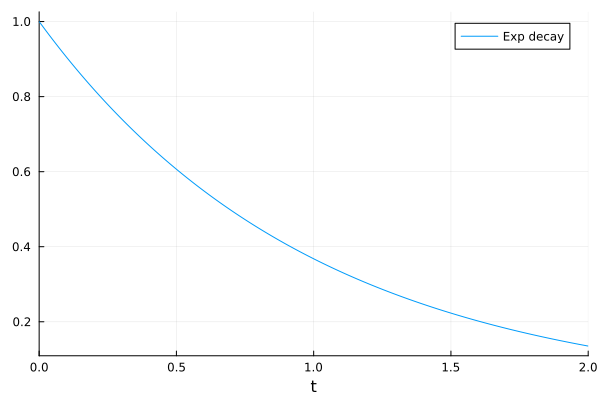
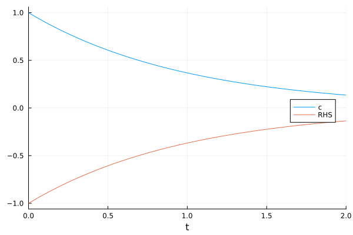
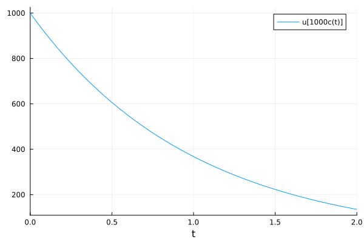
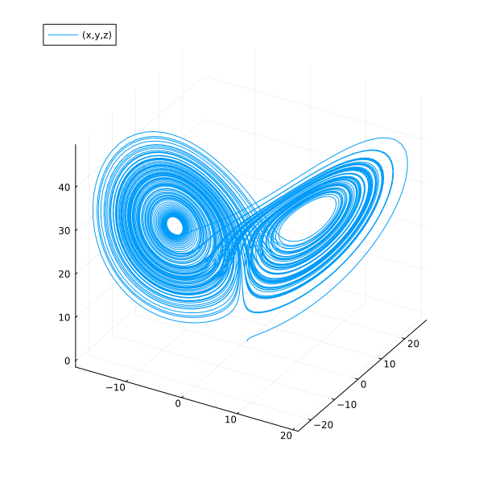
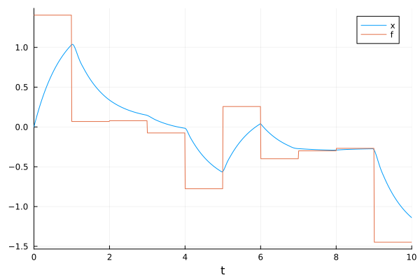
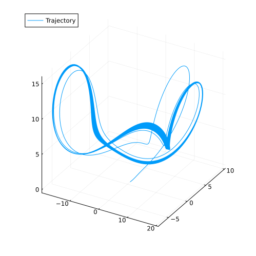
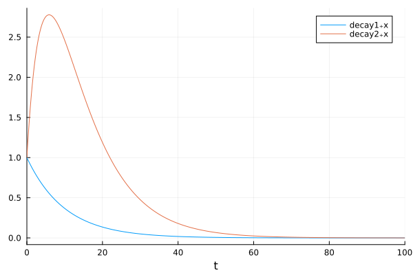
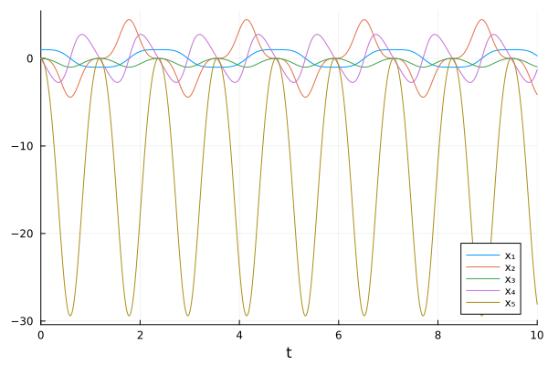

ModelingToolkit: define ODEs with symbolic expressions#
You can also define ODE systems symbolically using ModelingToolkit.jl (MTK) and let MTK generate high-performance ODE functions.
transforming and simplifying expressions for performance
Jacobian and Hessian generation
accessing eliminated states (called observed variables)
building and connecting subsystems programmatically (component-based modeling)
See also Simulating Big Models in Julia with ModelingToolkit @ JuliaCon 2021 Workshop.
Radioactive decay#
Here we use the same example of decaying radioactive elements
using ModelingToolkit
using OrdinaryDiffEq
using Plots
independent variable (time) and dependent variables
@independent_variables t
@variables c(t) RHS(t)
parameters: decay rate
@parameters λ
Differential operator w.r.t. time
D = Differential(t)
Differential(t)
Equations in MTK use the tilde character (~) for equality.
Every MTK system requires a name. The @named macro simply ensures that the symbolic name matches the name in the REPL.
eqs = [
RHS ~ -λ * c
D(c) ~ RHS
]
Build and ODE system from equations
@mtkbuild sys = ODESystem(eqs, t)
Setup initial conditions, time span, parameter values, the ODEProblem, and solve the problem.
p = [λ => 1.0]
u0 = [c => 1.0]
tspan = (0.0, 2.0)
prob = ODEProblem(sys, u0, tspan, p);
sol = solve(prob)
retcode: Success
Interpolation: 3rd order Hermite
t: 8-element Vector{Float64}:
0.0
0.10001999200479662
0.34208427066999536
0.6553980136343391
1.0312652525315806
1.4709405856363595
1.9659576669700232
2.0
u: 8-element Vector{Vector{Float64}}:
[1.0]
[0.9048193287657775]
[0.7102883621328676]
[0.5192354400036404]
[0.35655576576996556]
[0.2297097907863828]
[0.14002247272452764]
[0.1353360028400881]
Visualize the solution
plot(sol, label="Exp decay")

The solution interface provides symbolic access. You can access the results of c directly.
sol[c]
8-element Vector{Float64}:
1.0
0.9048193287657775
0.7102883621328676
0.5192354400036404
0.35655576576996556
0.2297097907863828
0.14002247272452764
0.1353360028400881
With interpolations with specified time points
sol(0.0:0.1:2.0, idxs=c)
t: 0.0:0.1:2.0
u: 21-element Vector{Float64}:
1.0
0.9048374180989599
0.8187305973051514
0.7408182261974484
0.6703197822435771
0.6065302341562359
0.5488116548085096
0.49658509875978446
0.4493280239179766
0.4065692349272286
⋮
0.30119273799114377
0.2725309051375335
0.24659717503493178
0.22313045099430742
0.20189530933816474
0.18268185222253555
0.16529821250790566
0.14956912660454402
0.13533600284008812
The eliminated term (RHS in this example) is still traceable.
plot(sol, idxs=[c, RHS], legend=:right)

The indexing interface allows symbolic calculations.
plot(sol, idxs=[c * 1000])

Lorenz system#
Here we setup the initial conditions and parameters with default values.
@independent_variables t
@variables x(t) = 1.0 y(t) = 0.0 z(t) = 0.0
@parameters (σ=10.0, ρ=28.0, β=8 / 3)
D = Differential(t)
eqs = [
D(x) ~ σ * (y - x)
D(y) ~ x * (ρ - z) - y
D(z) ~ x * y - β * z
]
@mtkbuild sys = ODESystem(eqs, t)
Here we are using default values, so we pass empty arrays for initial conditions and parameter values.
tspan = (0.0, 100.0)
prob = ODEProblem(sys, [], tspan, []);
sol = solve(prob)
retcode: Success
Interpolation: 3rd order Hermite
t: 1292-element Vector{Float64}:
0.0
3.5678604836301404e-5
0.0003924646531993154
0.003262408731175873
0.009058076622686189
0.01695647090176743
0.027689960116420883
0.041856352219618344
0.060240411865493296
0.08368541210909924
⋮
99.43545175575305
99.50217600300971
99.56297541572351
99.62622492183432
99.69561088424294
99.77387244562912
99.86354266863755
99.93826978918452
100.0
u: 1292-element Vector{Vector{Float64}}:
[1.0, 0.0, 0.0]
[0.9996434557625105, 0.0009988049817849058, 1.781434788799189e-8]
[0.9961045497425811, 0.010965399721242457, 2.1469553658389193e-6]
[0.9693591548287857, 0.0897706331002921, 0.00014380191884671585]
[0.9242043547708632, 0.24228915014052968, 0.0010461625485930237]
[0.8800455783133068, 0.43873649717821195, 0.003424260078582332]
[0.8483309823046307, 0.6915629680633586, 0.008487625469885364]
[0.8495036699348377, 1.0145426764822272, 0.01821209108471829]
[0.9139069585506618, 1.442559985646147, 0.03669382222358562]
[1.0888638225734468, 2.0523265829961646, 0.07402573595703686]
⋮
[1.2013409155396158, -2.429012698730855, 25.83593282347909]
[-0.4985909866565941, -2.2431908075030083, 21.591758421186338]
[-1.3554328352527145, -2.5773570617802326, 18.48962628032902]
[-2.1618698772305467, -3.5957801801676297, 15.934724265473792]
[-3.433783468673715, -5.786446127166032, 14.065327938066913]
[-5.971873646288483, -10.261846004477597, 14.060290896024572]
[-10.941900618598972, -17.312154206417734, 20.65905960858999]
[-14.71738043327772, -16.96871551014668, 33.06627229408802]
[-13.714517151605754, -8.323306384833089, 38.798231477265624]
Phase plot w.r.t symbols.
plot(sol, idxs=(x, y, z), size=(600, 600))

Non-autonomous ODEs#
Sometimes a model might have a time-variant external force, which is too complex or impossible to express it symbolically. In such situation, one could apply @register_symbolic to it to exclude it from symbolic transformations and use it numerically.
@independent_variables t
@variables x(t) f(t)
@parameters τ
D = Differential(t)
Differential(t)
Define a time-dependent random external force
value_vector = randn(10)
f_fun(t) = t >= 10 ? value_vector[end] : value_vector[Int(floor(t))+1]
f_fun (generic function with 1 method)
“Register” arbitrary Julia functions to be excluded from symbolic transformations. Just use it as-is.
@register_symbolic f_fun(t)
@mtkbuild fol_external_f = ODESystem([f ~ f_fun(t), D(x) ~ (f - x) / τ], t)
prob = ODEProblem(fol_external_f, [x => 0.0], (0.0, 10.0), [τ => 0.75]);
sol = solve(prob)
plot(sol, idxs=[x, f])

Second-order ODE systems#
ode_order_lowering(sys) automatically transforms a second-order ODE into two first-order ODEs.
using Plots
using ModelingToolkit
using OrdinaryDiffEq
@parameters σ ρ β
@independent_variables t
@variables x(t) y(t) z(t)
D = Differential(t)
eqs = [
D(D(x)) ~ σ * (y - x),
D(y) ~ x * (ρ - z) - y,
D(z) ~ x * y - β * z
]
@mtkbuild sys = ODESystem(eqs, t)
Note that you need to provide the initial condition for x’s derivative (D(x)).
u0 = [
D(x) => 2.0,
x => 1.0,
y => 0.0,
z => 0.0
]
p = [
σ => 28.0,
ρ => 10.0,
β => 8 / 3
]
tspan = (0.0, 100.0)
prob = ODEProblem(sys, u0, tspan, p, jac=true)
sol = solve(prob)
plot(sol, idxs=(x, y, z), label="Trajectory", size=(500, 500))

Composing systems#
https://docs.sciml.ai/ModelingToolkit/stable/basics/Composition/
By connecting equation(s) to couple ODE systems together, we can build component-based, hierarchical models.
using Plots
using OrdinaryDiffEq
using ModelingToolkit
using ModelingToolkit: t_nounits as t, D_nounits as D
function decay(; name)
@parameters a
@variables x(t) f(t)
ODESystem([
D(x) ~ -a * x + f
], t; name)
end
@named decay1 = decay()
@named decay2 = decay()
WARNING: import of ModelingToolkit.t_nounits into ##292 conflicts with an existing identifier; ignored.
WARNING: import of ModelingToolkit.D_nounits into ##292 conflicts with an existing identifier; ignored.
Define relations (connectors) between the two systems.
connected = compose(
ODESystem([
decay2.f ~ decay1.x,
D(decay1.f) ~ 0], t; name=:connected), decay1, decay2)
equations(connected)
simplified_sys = structural_simplify(connected)
equations(simplified_sys)
x0 = [decay1.x => 1.0
decay1.f => 0.0
decay2.x => 1.0]
p = [decay1.a => 0.1
decay2.a => 0.2]
tspan = (0.0, 100.0)
sol = solve(ODEProblem(simplified_sys, x0, tspan, p))
plot(sol, idxs=[decay1.x, decay2.x])

Convert existing functions into MTK systems#
modelingtoolkitize(prob) generates MKT systems from regular DE problems. I t can also generate analytic Jacobin functions for faster solving.
Example: DAE index reduction for the pendulum problem, which cannot be solved by regular ODE solvers.
using Plots
using ModelingToolkit
using OrdinaryDiffEq
using LinearAlgebra
function pendulum!(du, u, p, t)
x, dx, y, dy, T = u
g, L = p
du[1] = dx
du[2] = T * x
du[3] = dy
du[4] = T * y - g
# Do not write your function like this after you've learned MTK
du[5] = x^2 + y^2 - L^2
return nothing
end
pendulum_fun! = ODEFunction(pendulum!, mass_matrix=Diagonal([1, 1, 1, 1, 0]))
u0 = [1.0, 0.0, 0.0, 0.0, 0.0]
p = [9.8, 1.0]
tspan = (0.0, 10.0)
pendulum_prob = ODEProblem(pendulum_fun!, u0, tspan, p)
ODEProblem with uType Vector{Float64} and tType Float64. In-place: true
Non-trivial mass matrix: true
timespan: (0.0, 10.0)
u0: 5-element Vector{Float64}:
1.0
0.0
0.0
0.0
0.0
Convert the ODE problem into a MTK system.
tracedSys = modelingtoolkitize(pendulum_prob)
structural_simplify() and dae_index_lowering() transform the index-3 DAE into an index-0 ODE.
pendulumSys = tracedSys |> dae_index_lowering |> structural_simplify
The default u0 is included in the system already so one can use an empty array [] as the initial conditions.
prob = ODEProblem(pendulumSys, [], tspan);
sol = solve(prob, Rodas5P(), abstol=1e-8, reltol=1e-8)
┌ Warning: Initialization system is overdetermined. 1 equations for 0 unknowns. Initialization will default to using least squares. `SCCNonlinearProblem` can only be used for initialization of fully determined systems and hence will not be used here. To suppress this warning pass warn_initialize_determined = false. To make this warning into an error, pass fully_determined = true
└ @ ModelingToolkit ~/.julia/packages/ModelingToolkit/CvDvM/src/systems/diffeqs/abstractodesystem.jl:1446
retcode: Success
Interpolation: specialized 4rd order "free" stiffness-aware interpolation
t: 1305-element Vector{Float64}:
0.0
1.0e-6
1.1e-5
0.00011099999999999999
0.0010466037811921202
0.004063045474513508
0.00794188545926928
0.0121077885763386
0.016784515118072017
0.02172605785948642
⋮
9.939437955690178
9.947439461345477
9.955440967000776
9.963442472656075
9.971443978311374
9.979445483966673
9.987446989621972
9.995448495277271
10.0
u: 1305-element Vector{Vector{Float64}}:
[1.0, 0.0, 0.0, 0.0, 0.0]
[1.0, -4.8019999999999657e-17, -4.900000000000009e-12, -9.800000000000072e-6, -1.4405999999999968e-10]
[1.0, -6.391462000000028e-14, -5.929000000000031e-10, -0.00010780000000000034, -1.7431260000000092e-8]
[0.9999999999999981, -6.567364061999976e-11, -6.037289999999992e-8, -0.0010878000000000023, -1.7749632599999965e-6]
[0.9999999999855956, -5.5051486974382846e-8, -5.367359426515357e-6, -0.010256717055505578, -0.0001578003671397977]
[0.9999999967283344, -3.2208997265909783e-6, -8.089085867954903e-5, -0.039817845493907975, -0.0023781912454561662]
[0.9999999522408447, -2.405431542914682e-5, -0.0003090603628628303, -0.07783047304029803, -0.009086374669453116]
[0.9999997419989658, -8.523472721281003e-5, -0.0007183327924732369, -0.11865629131197372, -0.02111898410081311]
[0.9999990472098922, -0.00022706401192704043, -0.0013804272178232551, -0.16448806008980102, -0.0405845602082515]
[0.9999973252355406, -0.0004924523961325739, -0.002312903316891978, -0.21291468362508234, -0.06799935752282055]
⋮
[0.5278328468315321, -3.465427042040252, -0.8493482890935731, -2.1536114783910314, -24.97083945477471]
[0.4996869763733456, -3.5691094793655735, -0.866206070207693, -2.0589067532381904, -25.466458204319615]
[0.47072670257725824, -3.6689096678613606, -0.8822790952663332, -1.9574914139212973, -25.939005126804407]
[0.4409849971450936, -3.7643521103462865, -0.897514491692352, -1.8495777213226952, -26.386925768515283]
[0.4104985982284327, -3.854971511620565, -0.9118612456942773, -1.7354179849967295, -26.80872032403176]
[0.37930791331729713, -3.940316652207845, -0.9252705212441953, -1.6153041265381212, -27.20295301417608]
[0.34745689109120964, -4.019954264375825, -0.9376959738977688, -1.48956682547582, -27.568261312321408]
[0.31499286241358354, -4.09347286033376, -0.9490940560881279, -1.3585742418097415, -27.903364920031716]
[0.2962719704513438, -4.132413586252531, -0.9551036332437013, -1.2818696081504504, -28.080046483499565]
plot(sol, idxs=unknowns(tracedSys))

This notebook was generated using Literate.jl.